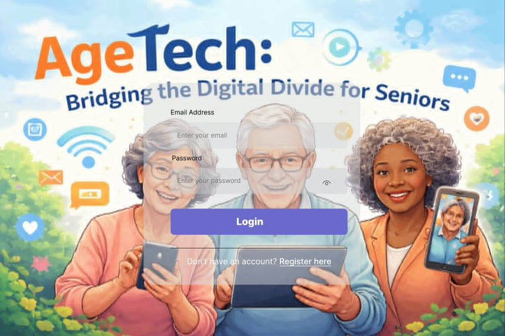

AgeTech
Capstone / Thesis Project
AgeTech: Bridging the Digital Divide for Seniors, a Web-based Tutorial Application
A web-based tutorial application designed to improve digital literacy among senior citizens. The system provides easy-to-follow learning materials through an accessible and user-friendly interface tailored to elderly users.
HTML
CSS
JavaScript
PHP
MySQL
Key Contributions:
- Developed and implemented core system features.
- Designed an accessible interface for senior citizens.
- Conducted testing and system improvements.